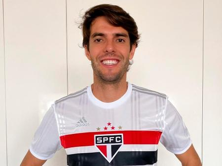

Kaká
Ricardo Izecson dos Santos Leite, mais conhecido como Kaká iniciou suas atividades no São Paulo
em 1 de Fevereiro, veio marcar o seu primeiro gol logo na segunda partida no classico vencido
contra o Santos por 4x2, sendo fundamental no jogo, quando entrou com a partida empatada em 1x1
e o São Paulo com 1 jogador a menos. Após três partidas em alto nível, a torcida já pedia a sua
titularidade. Em março do mesmo ano, Kaká entrou no segundo tempo de uma partida contra o
Botafogo onde o São Paulo perdia por 1x0, e ele acabou fazendo os 2 gols da vitória em apenas 2
minutos. Aí começava o seu protagonismo no time, sendo convocado por Felipão em amistoso pré
copa, e ser eleito pela torcida brasileira um dos Titulares absolutos para tal. A essa altura e
em tão pouco tempo, Kaká já havia se destacado e alcançado seus objetivos para o ano, uma vez
que anteriormente sofreu um acidente onde quase ficou paraplégico. Todo esse ínicio avassalador
lhe rendeu trofeus e a graça da torcida, quando em 2003 surgiu o interesse de clubes da Espanha
e Itália, onde ele se transferiria ao Milan, que mais tarde, lhe renderia o prêmio de melhor
jogador do mundo, no ano de 2007, fato este que veio a se tornar o ultimo brasileiro a conseguir
o feito. Seu retorno ao tricolor veio no ano de 2014, por empréstimo, quando atuva pelo clube
Americano, Orlando City. O meia atuou por alguns meses até voltar ao seu clube, onde se
aposentaria em 2017.
Pelo São Paulo, Kaká disputou 155 jogos e marcou 51 gols. Acabou conquistando apenas 2 titulos,
sendo eles o Torneio Rio-São Paulo de 2001 e o Supercampeonato Paulista de Futebol de 2002.
Porém, é lembrado pela torcida com grande amor.
